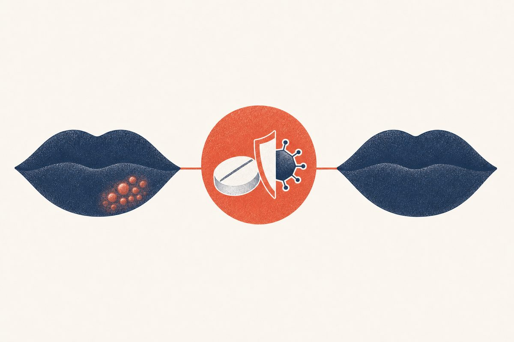

Key Takeaways
- The FDA-labeled valacyclovir regimen for cold sores is 2 grams twice in one day, taken 12 hours apart: two doses in total.[2][1]
- Valacyclovir is converted to acyclovir in the body, and about 54 percent of a dose reaches the bloodstream as acyclovir, versus an average of 10 to 20 percent for oral acyclovir.[2][3]
- Started at the earliest symptoms, before any visible sore, the one-day course shortened episodes by about a day and sped healing and pain relief in two randomized trials.[1][2]
- Oral and topical treatments both have trial support: a network meta-analysis ranked oral valacyclovir plus a steroid cream best for healing time, and a 2025 systematic review describes oral and topical therapy as complementary.[5][8]
- Timing matters: start at the tingle. The FDA label says benefit when treatment starts after a bump, blister, or ulcer has appeared has not been established.[2][1]
- In the cold sore trials, headache was reported by 14 percent of people taking valacyclovir versus 10 percent on placebo, and the dose is lowered in reduced kidney function.[2]
- Eye symptoms, a weakened immune system, or a sore that does not look typical need more than a routine prescription, so tell your clinician.[11][2]

What Valacyclovir Is
Valacyclovir, sold under the brand name Valtrex, is a prescription antiviral medication used to treat herpes virus infections. Its FDA-labeled uses include treatment of cold sores (herpes labialis) in adults and in children 12 years and older.[2]
Valacyclovir is not a separate antiviral but an ester of acyclovir, the original herpes antiviral, which makes it a prodrug: a form the body converts into the active drug. After you swallow valacyclovir, it is nearly completely converted to acyclovir as it passes through the gut and liver, and acyclovir then does the antiviral work.[2]
The reason this matters is practical. Acyclovir itself is poorly absorbed when taken by mouth: on average only 10 to 20 percent of an oral dose reaches the bloodstream.[3] Valacyclovir is better absorbed, and that higher exposure is what the researchers behind the one-day regimen set out to test with a short, high-dose course.[1][2]
How Valacyclovir Works
Inside an infected cell, herpes simplex virus copies its DNA so it can multiply. Acyclovir, the active form of valacyclovir, is first activated inside the cell by an enzyme the virus itself makes (thymidine kinase). The activated drug then blocks viral DNA copying, in part by being built into the growing viral DNA chain and stopping it.[2]
The key pharmacokinetic fact is bioavailability, the fraction of an oral dose that actually reaches the bloodstream. Oral acyclovir averages 10 to 20 percent, whereas the bioavailability of acyclovir after a dose of valacyclovir is about 54 percent.[2][3]
The trials and the label focus on starting at the earliest symptom. The label states that efficacy when valacyclovir is started after visible signs of a cold sore, such as a bump, blister, or ulcer, has not been established.[2][1]
The One-Day Dosing Regimen
The cold sore dose of valacyclovir is simple: 2 grams (2,000 mg) taken twice, 12 hours apart, for one day. That is the entire course; the label says not to exceed 1 day of treatment for cold sores.[2]
This regimen was tested in two randomized, placebo-controlled trials. Participants were told to start treatment at the first symptoms of a cold sore and took 2 grams twice in one day. In the first study, the median episode was 1.0 day shorter than with placebo, and time to healing and time to the end of pain or discomfort were also significantly shorter. A two-day course added no benefit over the one-day course.[1][2]
Start at the first sign. In the trials, people began treatment at the earliest symptoms and before any visible sore, and the label states that efficacy when treatment starts after a bump, blister, or ulcer has appeared has not been established.[2] A meta-analysis published in December 2025 found that oral and genital herpes trials over the past 30 years used varied endpoints with nonstandardized definitions, and called for a reassessment of trial endpoints.[7]
Why Timing Is Decisive
Valacyclovir works as early treatment, and the starting line is the prodrome: the tingling, itching, or burning that comes before a visible sore. In the trials behind the label, people started therapy at the earliest symptoms and before any signs of a cold sore, and their episodes were about 1 day shorter on average than with placebo.[1][2]
If a bump or blister has already formed, the label says the benefit of starting valacyclovir at that point has not been established.[2] An older trial of oral acyclovir showed a similar pattern: it shortened pain and healing time only in people who could start in the prodrome or early redness stage.[4] The practical message: if you feel the familiar tingle where you have had cold sores before, start treatment or contact a clinician right away.[2]
This timing is why quick access to a prescription matters: valacyclovir started after the sore has formed falls outside the window the label supports.[2]
Valacyclovir vs Acyclovir
Both drugs end up doing the same thing, delivering acyclovir to infected cells. The comparison is mostly about dosing and about what each has been tested and labeled for.
| Feature | Valacyclovir | Acyclovir |
|---|---|---|
| Cold sore regimen | 2 g twice, 12 hours apart (one day)[2] | Oral acyclovir is not FDA-labeled for cold sores[3]; a placebo-controlled trial tested 400 mg five times daily for 5 days[4] |
| Total doses | 2 | 25 (in that trial) |
| Bioavailability | ~54%[2] | ~10 to 20%[3] |
| Cold sore trial results | Median episode 1.0 day shorter than placebo[1] | Shorter pain and healing time when started in the prodrome or early redness stage; did not prevent sores from developing[4] |
The two drugs were tested in separate placebo-controlled trials, and herpes trials have used varied endpoints with nonstandardized definitions, so their results cannot be compared directly.[1][4][7] The practical differences are convenience, two doses in one day versus 25 doses over five days in the acyclovir trial, and the fact that the one-day valacyclovir course carries an FDA-labeled cold sore indication.[2][3][4]
Valacyclovir vs Topical Antivirals
Topical treatments are a reasonable option with modest effects. In its trials, over-the-counter docosanol 10% cream, applied 5 times daily, shortened median healing time by 18 hours compared with placebo.[13] In a large trial, a cream combining acyclovir 5% and hydrocortisone 1% prevented progression to an ulcerative sore more often than acyclovir cream alone or placebo (42 percent of patients had no ulcerative lesion, versus 35 percent and 26 percent), and the number of patients with positive virus cultures did not differ among the groups.[9] Topical treatments mainly shorten lesion duration and ease local symptoms when applied early, and generally do not change how often cold sores recur.[8]
How do oral and topical treatments compare? The network meta-analysis by Koe and colleagues found several agents effective; the best-ranked option for shortening healing time was oral valacyclovir combined with a steroid cream (clobetasol), followed by a topical antiviral (vidarabine), and no option was shown superior to another for prevention.[5] The 2025 systematic review by Mancini and colleagues concluded that topical and systemic therapies serve complementary roles, with systemic therapy also addressing recurrence reduction.[8] The authors of the one-day valacyclovir trials describe it as a convenient dosing alternative to topical therapies.[1]
Side Effects and Safety
In the one-day cold sore trials, adverse events were similar between valacyclovir and placebo; reported side effects included headache (14 percent versus 10 percent on placebo) and dizziness (2 percent versus 1 percent).[1][2] Across all of its uses, the most common side effects were headache, nausea, and abdominal pain.[2] The label also warns about acute kidney failure and nervous system effects such as agitation, confusion, or hallucinations. Kidney failure has been reported in older adults, in people with kidney disease who received higher-than-recommended doses, in people taking other drugs that can harm the kidneys, and in people who were not adequately hydrated.[2]
| Concern | What to know |
|---|---|
| Common side effects | Cold sore trials: headache, dizziness. All uses: headache, nausea, abdominal pain[2] |
| Kidney function | The cold sore dose is lowered in reduced kidney function: two 1-gram doses, two 500-mg doses, or a single 500-mg dose, depending on kidney function[2] |
| Hydration | The label advises adequate hydration for all patients; kidney failure has been reported in people who were not adequately hydrated[2] |
| Pregnancy and breastfeeding | Decades of data have not identified a drug-associated risk of major birth defects; acyclovir passes into breast milk. Discuss with a clinician[2] |
| Drug interactions | No clinically significant drug interactions are known, but kidney failure has been reported in people taking other drugs that can harm the kidneys[2] |
Older adults are more likely to have reduced kidney function that requires a lower dose, and more likely to have kidney or nervous system side effects, so older adults and anyone with kidney disease should make sure the prescriber knows before taking valacyclovir.[2]
Who Should Not Take Valacyclovir
Valacyclovir is not appropriate for everyone. It should not be taken by anyone who has had a clinically significant allergic reaction, such as anaphylaxis or a severe skin reaction, to valacyclovir, acyclovir, or any ingredient in the tablets.[2] The dose must be lowered in reduced kidney function, and extra care is needed in older adults, in people who are not adequately hydrated, and in people taking other medicines that can harm the kidneys.[2] The label also states that its efficacy and safety have not been established in people with weakened immune systems (apart from one genital herpes use) or in children under 12 with cold sores.[2]
These exclusions are a reminder that valacyclovir is a real prescription drug, with an allergy contraindication and kidney-based dosing, not a supplement. A clinician review of your kidney health, allergies, and medication list is part of safe prescribing, and it is one of the reasons a proper evaluation, in person or by telehealth, precedes a prescription.[2]
Suppressive (Daily) Valacyclovir Dosing
For people with frequent or burdensome cold sore recurrences, valacyclovir can also be taken daily to help prevent outbreaks, rather than treating each episode after it starts. The FDA label does not include a daily prevention regimen for cold sores; its daily suppression doses are for genital herpes.[2] In cold sore prevention studies, valacyclovir 500 mg daily for 4 months was effective, and expert reviewers have described other preventive regimens, so the dose and duration are set with a clinician.[6][12]
Systematic reviews support oral antivirals, including valacyclovir, for preventing recurrent cold sores.[6][14] The Cochrane review found that long-term use of oral antivirals can prevent cold sores but that the clinical benefit is small; in one trial, long-term valacyclovir lowered the rate by 0.09 episodes per person per month.[14] Suppression is not a cure: no cure is available, and cold sores recur periodically.[14]
Long-term oral antivirals can limit the number of recurrences, and systemic therapy is particularly suited to recurrent or high-risk infections.[10][8] Daily suppression is worth discussing with a clinician if your outbreaks are frequent or severe, or if recurring sores are particularly disruptive for you.
| Goal | Regimen | When it is used |
|---|---|---|
| Treat an episode | 2 g twice, 12 hours apart, one day[2] | At the earliest symptom of every outbreak[2] |
| Prevent recurrences | Daily dosing set with a clinician; 500 mg daily for 4 months was effective in studies[6] | Frequent or severe recurrences[8] |
Getting Valacyclovir via Telehealth
Because valacyclovir is labeled to start at the earliest symptom of a cold sore, quick access to a prescription matters.[2] In a video visit, a clinician reviews your symptoms and history and, if a cold sore is likely and valacyclovir is appropriate, can prescribe the one-day regimen.
Some situations need in-person care. Eye symptoms such as pain, redness, blurred vision, tearing, discharge, or light sensitivity can signal a herpes eye infection, which can scar the cornea and cause vision loss, so see an eye doctor right away.[11] Herpes can spread to the eye when you touch an active sore and then your eye.[11] People with weakened immune systems need an individualized plan: the label does not establish efficacy and safety for them, and expert reviewers describe longer treatment courses.[2][12] A sore that does not look like your usual cold sore also deserves an in-person look.
Valacyclovir requires a prescription, so while the one-day course is the goal, it begins with a clinician review of your symptoms and any relevant medical history, not with a self-serve purchase.
Frequently Asked Questions
The FDA label says the benefit of valacyclovir started after a bump, blister, or ulcer has appeared has not been established, so it is meant to be started at the tingle. If a sore has already formed, ask a clinician whether treatment still makes sense for you.[2]
In the cold sore trials, reported side effects included headache (14 percent versus 10 percent on placebo) and dizziness (2 percent versus 1 percent). Across all uses, the most common were headache, nausea, and abdominal pain. Kidney failure and nervous system effects such as confusion have been reported, including in older adults and in people with kidney disease given too high a dose.[2]
Yes, through a synchronous telehealth visit with a clinician who reviews your symptoms and history. Because the label supports starting at the earliest symptom, getting a prescription quickly matters.[2]
No. People who have had a serious allergic reaction to valacyclovir or acyclovir should not take it, the dose must be lowered in reduced kidney function, and the label does not establish efficacy and safety for most people with weakened immune systems. A clinician should review your history before prescribing.[2]
Valacyclovir can be taken with or without food. The label advises staying adequately hydrated.[2]
References
- Spruance SL, Jones TM, Blatter MM, Vargas-Cortes M, Barber J, Hill J, et al. High-dose, short-duration, early valacyclovir therapy for episodic treatment of cold sores: results of two randomized, placebo-controlled, multicenter studies. Antimicrobial Agents and Chemotherapy. 2003;47(3):1072-1080. Randomized controlled trials. doi:10.1128/AAC.47.3.1072-1080.2003
- GlaxoSmithKline LLC. VALTREX (valacyclovir) tablets, for oral use: prescribing information. Revised November 2025. DailyMed, U.S. National Library of Medicine. Accessed November 7, 2026. DailyMed Valtrex label
- U.S. Food and Drug Administration. ZOVIRAX (acyclovir) capsules, tablets, and suspension: prescribing information. Revised November 2025. Drugs@FDA. Accessed November 7, 2026. FDA Zovirax label
- Spruance SL, Stewart JC, Rowe NH, McKeough MB, Wenerstrom G, Freeman DJ. Treatment of recurrent herpes simplex labialis with oral acyclovir. The Journal of Infectious Diseases. 1990;161(2):185-190. Randomized controlled trial. doi:10.1093/infdis/161.2.185
- Koe KH, Veettil SK, Maharajan MK, Syeed MS, Nair AB, Gopinath D. Comparative efficacy of antiviral agents for prevention and management of herpes labialis: a systematic review and network meta-analysis. Journal of Evidence-Based Dental Practice. 23(1):101778. Published online September 14, 2022. Systematic review and network meta-analysis. doi:10.1016/j.jebdp.2022.101778
- Rahimi H, Mara T, Costella J, Speechley M, Bohay R. Effectiveness of antiviral agents for the prevention of recurrent herpes labialis: a systematic review and meta-analysis. Oral Surgery, Oral Medicine, Oral Pathology and Oral Radiology. 2012;113(5):618-627. Systematic review and meta-analysis. doi:10.1016/j.oooo.2011.10.010
- Sloan A, Mortezavi M, Gerhart J, Banerjee A, Alami NN, Najera I, et al. Orolabial and genital herpes clinical trials: a meta-analysis of endpoints. Open Forum Infectious Diseases. 13(1):ofaf776. Published online December 17, 2025. Systematic review and meta-analysis. doi:10.1093/ofid/ofaf776
- Mancini A, Inchingolo AM, Marinelli G, Trilli I, Sardano R, Pezzolla C, et al. Topical and systemic therapeutic approaches in the treatment of oral herpes simplex virus infection: a systematic review. International Journal of Molecular Sciences. 2025;26(17):8490. Systematic review. doi:10.3390/ijms26178490
- Hull CM, Harmenberg J, Arlander E, Aoki F, Bring J, Darpö B, et al. Early treatment of cold sores with topical ME-609 decreases the frequency of ulcerative lesions: a randomized, double-blind, placebo-controlled, patient-initiated clinical trial. Journal of the American Academy of Dermatology. 64(4):696.e1-11. Published online September 20, 2010. Randomized controlled trial. doi:10.1016/j.jaad.2010.08.012
- Opstelten W, Neven AK, Eekhof J. Treatment and prevention of herpes labialis. Canadian Family Physician. 2008;54(12):1683-1687. Review. PMID 19074705
- Porter D; reviewed by Chaudhary OR. Herpes eye infections: what is herpes keratitis? American Academy of Ophthalmology, EyeSmart. Published August 13, 2026. Accessed November 7, 2026. aao.org herpes keratitis
- Woo SB, Challacombe SJ. Management of recurrent oral herpes simplex infections. Oral Surgery, Oral Medicine, Oral Pathology, Oral Radiology, and Endodontics. 2007;103 Suppl:S12.e1-18. Review. doi:10.1016/j.tripleo.2006.11.004
- Sacks SL, Thisted RA, Jones TM, Barbarash RA, Mikolich DJ, Ruoff GE, et al. Clinical efficacy of topical docosanol 10% cream for herpes simplex labialis: a multicenter, randomized, placebo-controlled trial. Journal of the American Academy of Dermatology. 2001;45(2):222-230. Randomized controlled trials. doi:10.1067/mjd.2001.116215
- Chi CC, Wang SH, Delamere FM, Wojnarowska F, Peters MC, Kanjirath PP. Interventions for prevention of herpes simplex labialis (cold sores on the lips). Cochrane Database of Systematic Reviews. 2015;(8):CD010095. Systematic review and meta-analysis. doi:10.1002/14651858.CD010095.pub2